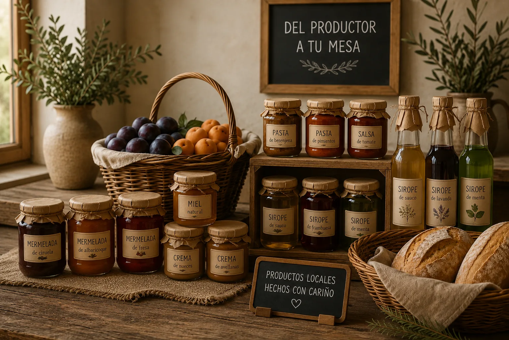
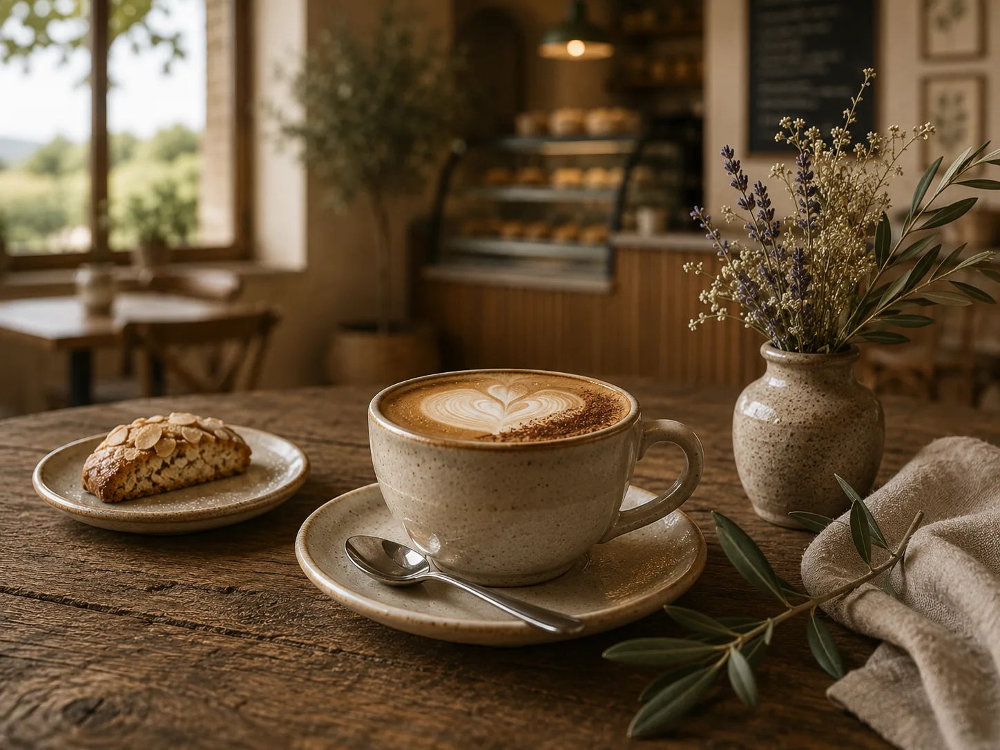
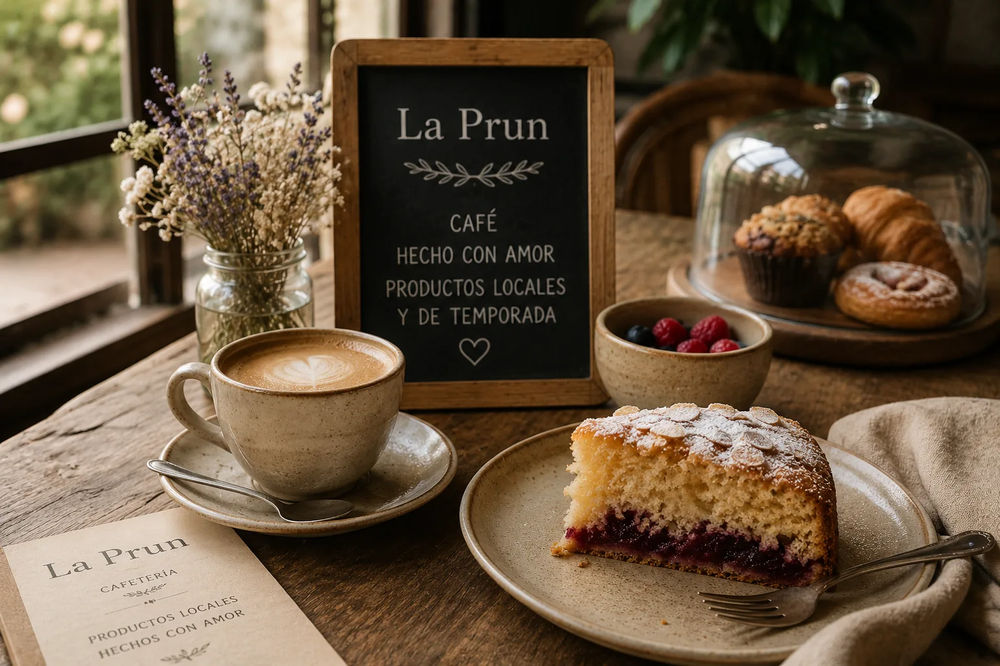
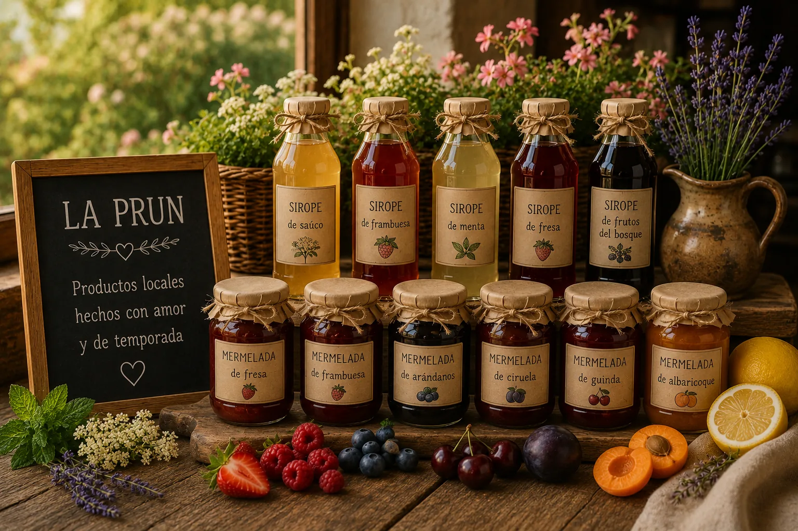
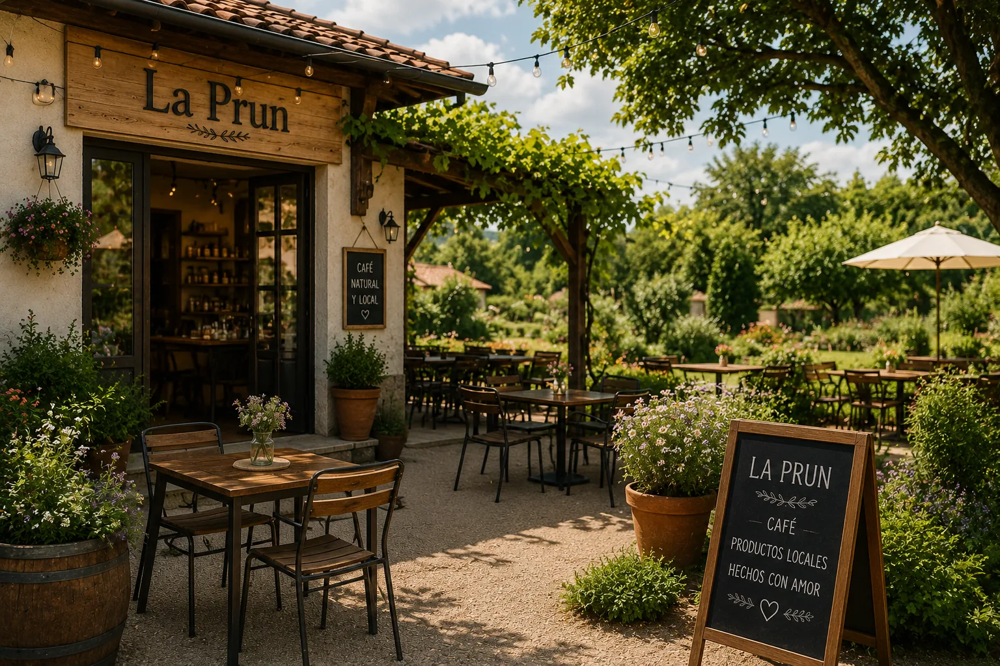
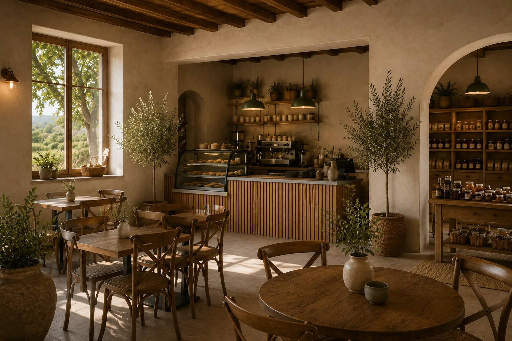
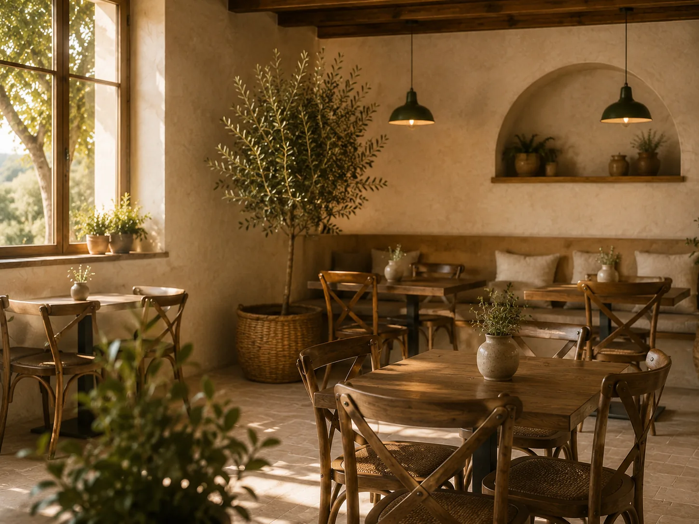

Café
Des cafés préparés avec soin, à savourer dans une ambiance calme et conviviale.

CAFÉ · PRODUITS LOCAUX · EXPÉRIENCE AUTHENTIQUE
Un lieu chaleureux où se rencontrent le café, les produits artisanaux et la vie locale.
NOTRE HISTOIRE
La Prun est un lieu pour prendre le temps de savourer : café, pâtisseries, produits artisanaux et saveurs locales.
Une proposition qui associe tradition, nature et expérience contemporaine dans un cadre accueillant.

CAFÉ
Des cafés préparés avec soin, à savourer dans une ambiance calme et conviviale.
Des pâtisseries et de petites gourmandises pour accompagner chaque moment.
Une sélection de produits artisanaux et de saveurs proposées par les producteurs de la région.


BOUTIQUE LOCALE

LA PRUN


RÉSERVATIONS
Réservez votre table et profitez de La Prun à votre rythme.
Demander une réservation
VENEZ NOUS VOIR
Adresse à définir
Horaires à définir
contacto@laprun.es